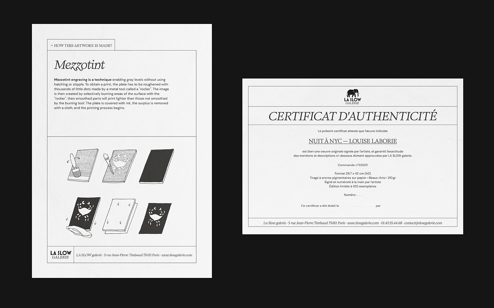
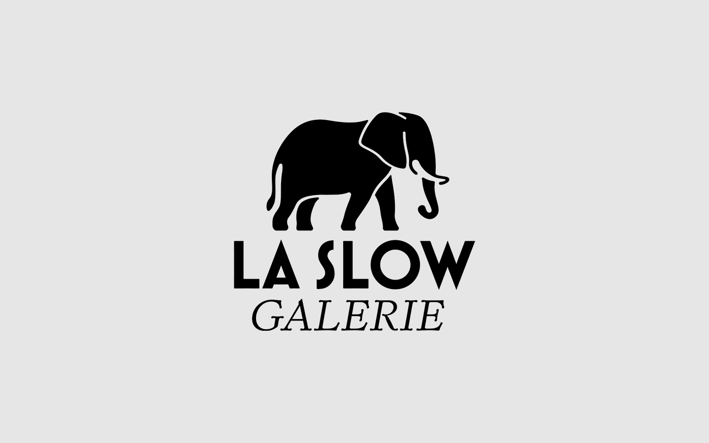
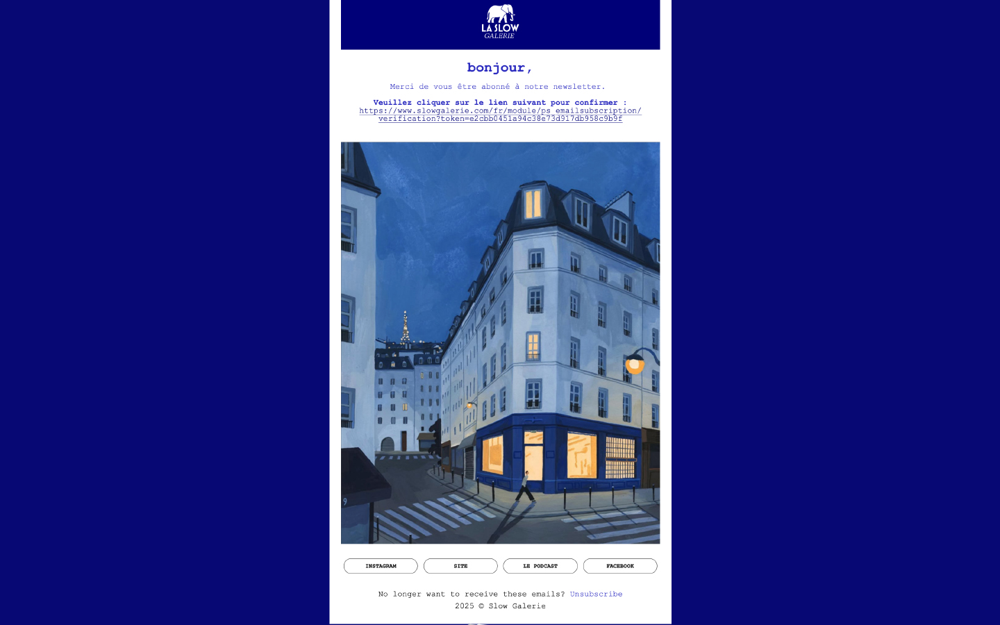
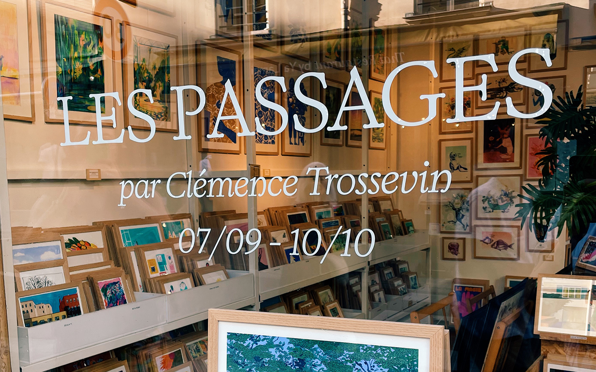

La Slow galerie
Mise en pages
Email design
papeterie & logotype
2024-2025
Refonte d’identité visuelle pour la Slow galerie. Conception des fiches techniques et des multiples documents de communication de la galerie. Plus de 5 000 dessins sont exposés à la SLOW Galerie, principalement des éditions multiples : les multiples ou « estampes » sont des œuvres originales, signées et numérotées à la main par les Artistes, avec un tirage inférieur à 300 exemplaires.



